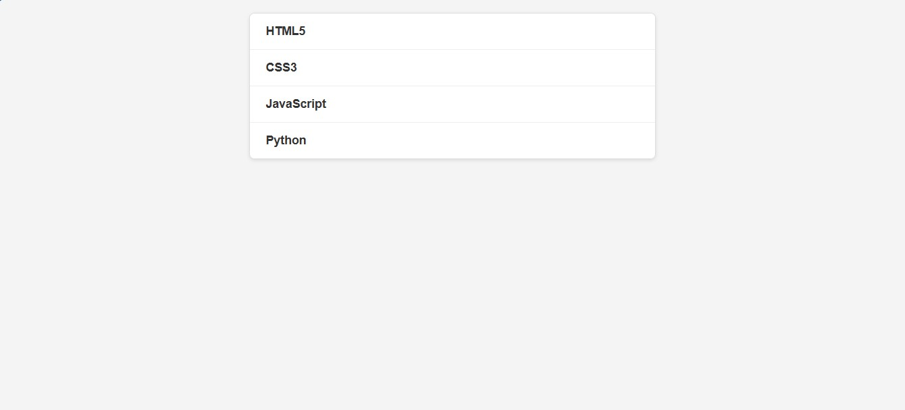

Acerca de Mí

¡Hola! Soy Harold Rosado Vargas, un desarrollador web en formación, entusiasta del diseño. Me apasiona el frontend. Estoy aprendiendo HTML, CSS, JavaScript. Busco oportunidades para aplicar mis habilidades, colaborar en proyectos.
Mis Proyectos
Carousel de Imagen
Un carousel de imagenes que se cambia automaticamente, creado con HTML, CSS, JavaScript.
Tecnologías: HTML, CSS (con Flexbox), JavaScript
Nombre del Proyecto 2
Descripción del segundo proyecto. Destaca otras características o tecnologías.
Tecnologías: HTML, CSS (con Flexbox), JavaScript
Mis Habilidades
Lenguajes
- HTML5
- CSS3
- JavaScript (ES6+)
Frameworks y Librerías
- React, Vue, Angular
- Bootstrap, Tailwind CSS
Herramientas y Otros
- Git & GitHub
- VS Code
- npm, yarn
Contacto
Puedes contactarme a través de los siguientes medios: